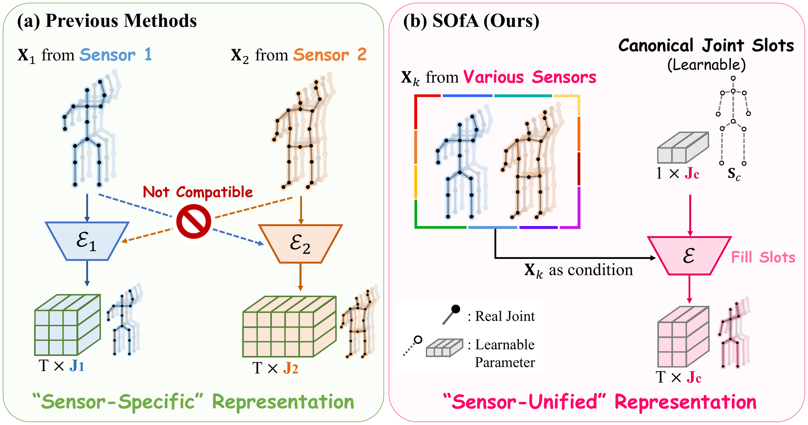
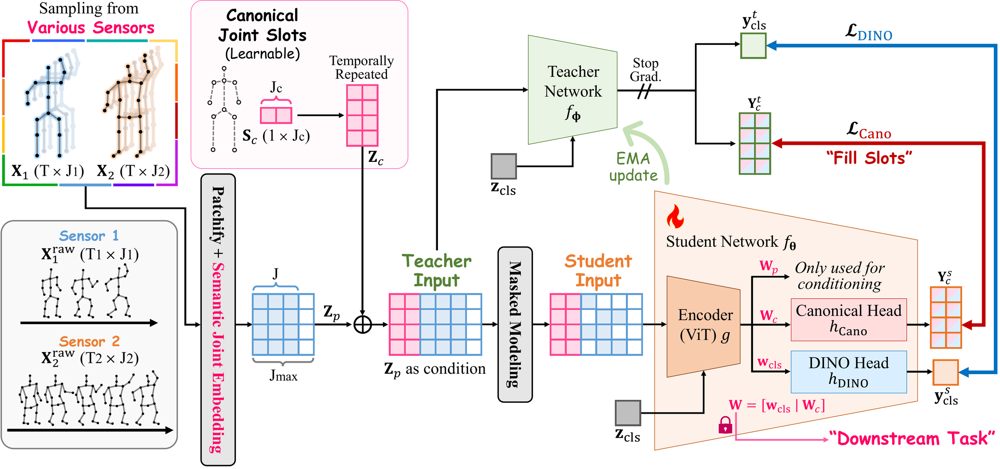
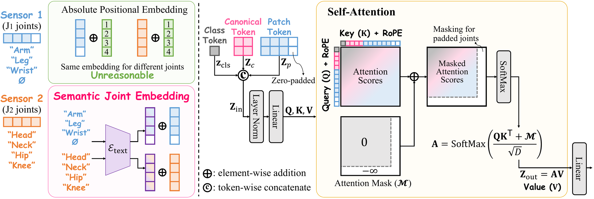
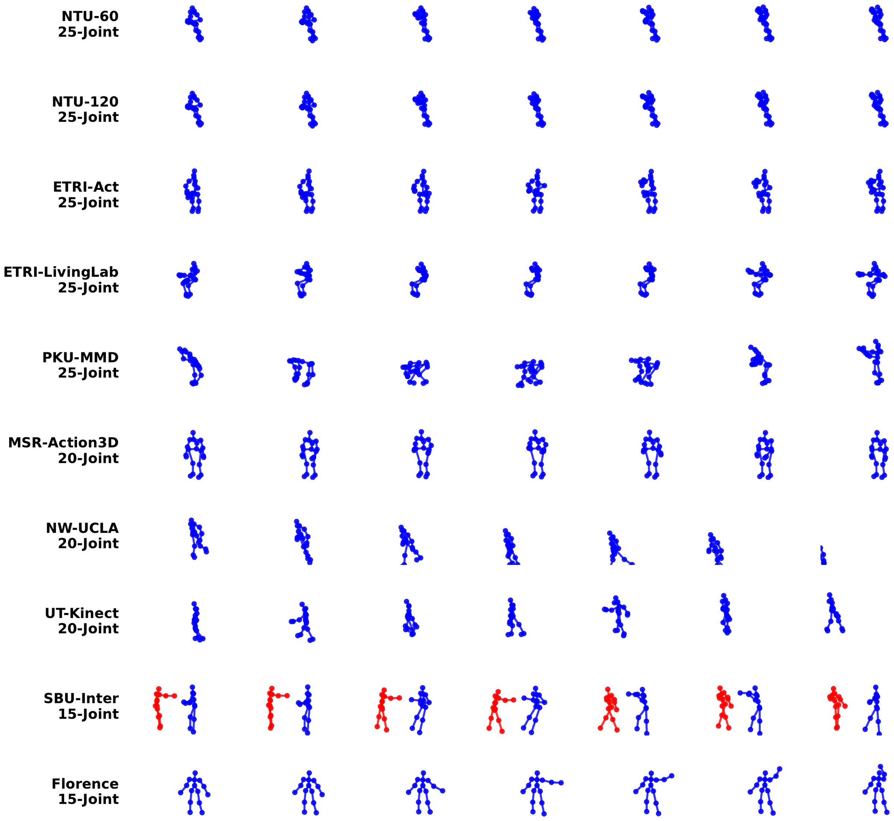
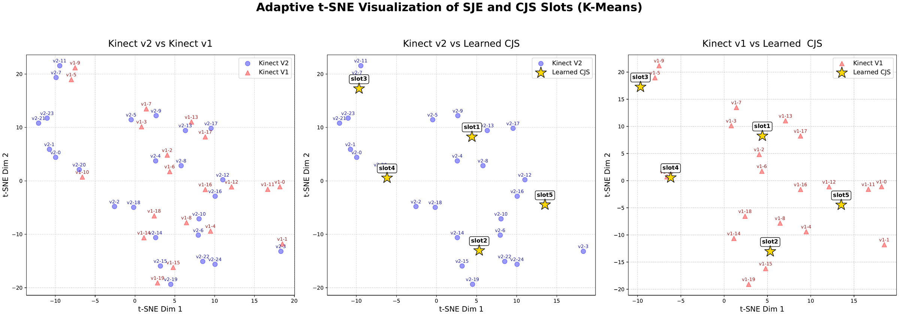
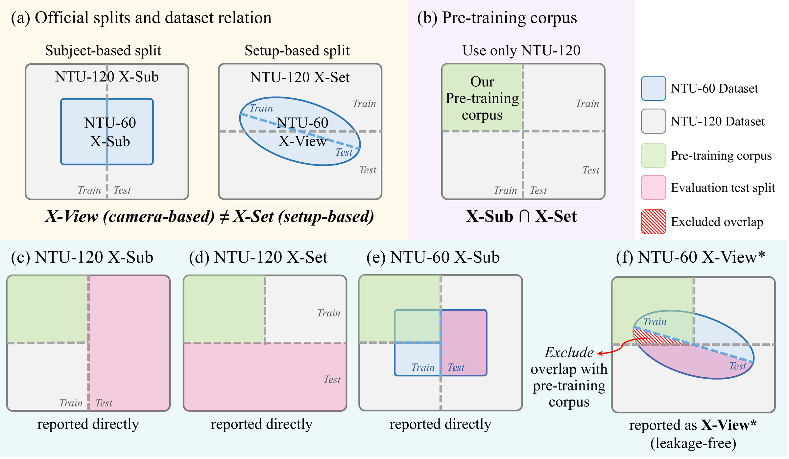

Code and pre-trained weights will be released soon.

(a) Previous methods couple the architecture to a fixed joint count and rigid absolute
positional embeddings, so each sensor needs its own isolated encoder and the resulting features
are mutually incompatible — a sensor-specific representation.
(b) SOfA (Ours) introduces a fixed-size set of learnable Canonical Joint Slots
Sc. An arbitrary sensor sequence enters only as a condition, and a
single shared encoder dynamically fills the slots to emit a standardized,
sensor-unified representation regardless of the original joint count.
| Property | Standard SSL | HSP (CVPR'25) | SOfA (Ours) |
|---|---|---|---|
| Cross-Sensor Capability | ✗ | Intra-scene (Paired) | Universal (Unpaired) |
| Alignment Strategy | ✗ | Skeletal interpolation | Canonical Joint Slots + Semantic Joint Embedding |
| Sensor Flexibility | ✗ | Pre-defined 2D–3D pair | Arbitrary 3D sensor |
| Dataset Dependency | Homogeneous | Heterogeneous (Paired) | Heterogeneous (Independent) |
| Representation Scope | Domain-specific | Multi-modal fusion | Generalist foundation |
Self-supervised learning (SSL) has become the standard route to generalizable motion representations from large-scale unlabeled data. However, existing approaches are bottlenecked by the inherent heterogeneity of skeleton data — varying joint counts, indexing protocols, and topological structures across sensors — which forces separate, sensor-specific or even dataset-specific models.
We introduce SOfA (Skeleton One for All), the first generalist foundation model for sensor-unified skeleton representation learning across diverse sensors.
To absorb the dimensional gap caused by varying joint counts, we introduce a fixed-size set of learnable Canonical Joint Slots, a universal vessel that accommodates arbitrary skeletal topologies; SOfA fills these slots through an attention mechanism that dynamically aggregates skeletal information from sensor-specific inputs. To resolve joint index misalignment across sensors, we replace absolute positional embeddings with a Semantic Joint Embedding derived from a pre-trained text encoder.
We standardize ten 3D skeleton datasets for unified training. Extensive experiments show that SOfA serves as a truly universal encoder, achieving state-of-the-art performance across a wide range of downstream tasks and sensor types — often outperforming dataset-specific models with a single foundation model.


(Left) Semantic Joint Embedding (SJE). Absolute positional embeddings assign rigid numerical indices, so the same index refers to different anatomical joints across sensors — or to empty, zero-padded slots. SJE instead builds a prompt from each sensor's joint metadata ("A human skeleton joint of the {Left Wrist}") and encodes it with a pre-trained T5 text encoder, giving anatomically identical joints a consistent latent identity across every dataset and inheriting semantic relations between joint names.
(Right) Canonical Joint Slots (CJS). The class token, the canonical tokens and the condition patch tokens propagate jointly through masked self-attention, so the slots are filled by aggregating information from the visible joints. An attention mask assigns −∞ to zero-padded joint positions, so the final representation is computed strictly from valid skeletal information regardless of the input's original joint count.
| Dataset | Tracker | Joints | Classes | Samples | Evaluation Setting |
|---|---|---|---|---|---|
| NTU-60 | Kinect v2 | 25 | 60 | 56,880 | Pre-train & Downstream |
| NTU-120 | Kinect v2 | 25 | 120 | 114,480 | Pre-train & Downstream |
| PKU-MMD | Kinect v2 | 25 | 51 | 7,096 | Pre-train & Downstream |
| ETRI-Act | Kinect v2 | 25 | 55 | 112,620 | Pre-train & Downstream |
| ETRI-LivingLab | Kinect v2 | 25 | 55 | 8,605 | Pre-train & Downstream |
| MSR-Action3D | Kinect v1 | 20 | 20 | 567 | Pre-train & Downstream |
| NW-UCLA | Kinect v1 | 20 | 10 | 1,494 | Pre-train & Downstream |
| UT-Kinect | Kinect v1 | 20 | 10 | 199 | Pre-train & Downstream |
| SBU-Inter | Custom Tracker 1 | 15 | 8 | 282 | Unseen (OOD) |
| Florence | Custom Tracker 2 | 15 | 9 | 215 | Unseen (OOD) |

| Method | Publication | NTU-60 | NTU-120 | PKU-MMD | ||
|---|---|---|---|---|---|---|
| X-Sub | X-View | X-Sub | X-Set | X-Sub | ||
| Sensor-Specific Representation: | ||||||
| GL-Transformer | ECCV'22 | 76.3 | 83.8 | 66.0 | 68.7 | – |
| CPM | ECCV'22 | 78.7 | 84.9 | 68.7 | 69.6 | 48.3 |
| CMD | ECCV'22 | 79.8 | 86.9 | 70.3 | 71.5 | 43.0 |
| AimCLR | AAAI'22 | 74.3 | 79.7 | 63.4 | 63.4 | – |
| HYSP | ICLR'23 | 78.2 | 82.6 | 61.8 | 64.6 | – |
| HaLP | CVPR'23 | 79.7 | 86.8 | 71.1 | 72.2 | 43.5 |
| ActCLR | CVPR'23 | 80.9 | 86.7 | 69.0 | 70.5 | – |
| RVTCLR | ICCV'23 | 74.7 | 79.1 | – | – | – |
| SkeletonMAE | ICMEW'23 | 74.8 | 77.7 | 72.5 | 73.5 | 36.1 |
| MAMP | ICCV'23 | 84.9 | 89.1 | 78.6 | 79.1 | 53.8 |
| PTSL | AAAI'23 | 77.3 | 81.8 | 66.2 | 67.7 | 49.3 |
| S-JEPA | ECCV'24 | 85.3 | 89.8 | 79.6 | 79.9 | 53.5 |
| IGM | ECCV'24 | 86.2 | 91.2 | 80.0 | 81.4 | – |
| MacDiff | ECCV'24 | 86.4 | 91.0 | 79.4 | 80.2 | – |
| HSP | CVPR'25 | 80.7 | 88.0 | 71.0 | 73.2 | 48.9 |
| USDRL | AAAI'25 | 85.2 | 91.7 | 76.6 | 78.1 | 54.4 |
| GFP | ICCV'25 | 85.9 | 92.0 | 79.1 | 80.3 | 56.2 |
| AMR | CVPR'26 | 87.4 | 92.3 | 81.1 | 81.9 | 60.3 |
| Sensor-Unified Representation: | ||||||
| SOfA (Ours) | – | 85.7 | 92.1* | 79.2 | 80.4 | 65.4 |
| SOfA-L (Ours) | – | 87.0 | 92.6* | 79.5 | 82.0 | 67.1 |
| Methods | ETRI-Act |
|---|---|
| Fully-supervised: | |
| IndRNN | 73.9 |
| Beyond Joint | 79.1 |
| SK-CNN | 83.6 |
| ST-GCN | 86.8 |
| Ensem-NN | 83.0 |
| MANs | 82.4 |
| HCN | 88.0 |
| FSA-CNN | 90.6 |
| Un-supervised (SSL): | |
| SOfA (Ours) | 87.9 |
| Methods | NW-UCLA |
|---|---|
| Sensor-Specific: | |
| LongT-GAN | 74.3 |
| P&C | 84.9 |
| MCAE-MP | 84.9 |
| SeBiReNet | 80.3 |
| Colorization | 91.1 |
| GL-Transformer | 90.4 |
| Masked-Color | 92.0 |
| Sensor-Unified: | |
| SOfA (Ours) | 92.9 |
| Method | Tokens | GFLOPs | PKU-MMD | |
|---|---|---|---|---|
| T × J | Train | Inference | X-Sub | |
| Sensor-Specific: | ||||
| SkeletonMAE | 30 × 25 | 19.67 | 28.32 | 36.1 |
| MAMP | 30 × 25 | 19.67 | 28.32 | 53.8 |
| S-JEPA | 30 × 25 | 47.99 | 28.32 | 53.5 |
| GFP | 30 × 25 | 4.18 | 28.32 | 56.2 |
| Sensor-Unified: | ||||
| SOfA | 8 × (25+5) | 8.60 | 4.30 | 65.4 |
| SOfA-L | 8 × (25+5) | 14.90 | 7.45 | 67.1 |
| Methods | Florence |
|---|---|
| Seen + Fully-supervised: | |
| Seidenari et al. | 82.0 |
| Devanne et al. | 87.0 |
| Vemulapalli et al. | 90.9 |
| HarSkel | 94.4 |
| Unseen + Sensor-Specific: | |
| SkeletonMAE | 66.8 |
| MAMP | 73.7 |
| Unseen + Sensor-Unified: | |
| SOfA (Ours) | 91.7 |
| Methods | SBU-Inter |
|---|---|
| Seen + Fully-supervised: | |
| Co-LSTM | 90.4 |
| ST-LSTM | 93.3 |
| VA-LSTM | 97.2 |
| GCA | 94.9 |
| LSTM-IRN | 98.2 |
| IGFormer | 98.4 |
| ISTA-Net | 98.5 |
| Unseen + Sensor-Specific: | |
| SkeletonMAE | 73.1 |
| MAMP | 80.2 |
| Unseen + Sensor-Unified: | |
| SOfA (Ours) | 97.0 |
| Methods | NTU-60 | |
|---|---|---|
| X-Sub | X-View | |
| Sensor-Specific: | ||
| CPM | 56.7 | 57.5 |
| CMD | 50.6 | 53.0 |
| HaLP | 46.6 | 48.7 |
| HiCo | 54.4 | 54.8 |
| UmURL | 58.1 | 58.3 |
| SkeletonMAE | 54.4 | 54.6 |
| MAMP | 66.0 | 68.7 |
| S-JEPA | 67.5 | 69.1 |
| USDRL | 57.3 | 60.7 |
| GFP | 71.8 | 72.9 |
| Sensor-Unified: | ||
| SOfA | 71.6 | 74.2* |
| Methods | NTU-60 | |
|---|---|---|
| X-Sub | X-View | |
| Sensor-Specific: | ||
| LongT-GAN | 39.1 | 48.1 |
| P&C | 50.7 | 76.3 |
| ISC | 62.5 | 82.6 |
| HaLP | 65.8 | 83.6 |
| HiCo | 68.3 | 84.8 |
| MAMP | 62.0 | 70.0 |
| GFP | 70.9 | 87.1 |
| Sensor-Unified: | ||
| SOfA | 72.1 | 86.8* |
| Methods | MSR-Action3D |
|---|---|
| Fully-supervised: | |
| HON4D | 82.2 |
| Rahmani et al. | 82.7 |
| Tran et al. | 84.5 |
| Un-supervised: | |
| SOfA | 82.2 |
| Methods | UT-Kinect |
|---|---|
| Fully-supervised: | |
| Xia et al. | 90.9 |
| Devanne et al. | 91.5 |
| Wang et al. | 96.5 |
| Un-supervised: | |
| SOfA | 97.0 |
| Modules | 25-Joint Datasets | 20-Joint Datasets | ||||
|---|---|---|---|---|---|---|
| CJS | SJE | NTU-60 | NTU-120 | PKU-MMD | NW-UCLA | UT-Kinect |
| ✗ | ✗ | 75.2 | 70.7 | 50.9 | 68.9 | 77.0 |
| ✓ | ✗ | 84.9 | 78.7 | 64.7 | 72.3 | 80.0 |
| ✗ | ✓ | 76.4 | 71.4 | 52.3 | 86.7 | 91.0 |
| ✓ | ✓ | 85.7 | 79.2 | 65.4 | 92.9 | 97.0 |
| Slots | 25-Joint Datasets | 20-Joint Datasets | GFLOPs | |||
|---|---|---|---|---|---|---|
| CJS | NTU-60 | NTU-120 | PKU-MMD | NW-UCLA | UT-Kinect | Inference |
| 0 | 76.4 | 71.4 | 52.3 | 86.7 | 91.0 | 3.60 |
| 5 | 85.7 | 79.2 | 65.4 | 92.9 | 97.0 | 4.30 |
| 10 | 85.5 | 79.0 | 64.5 | 92.7 | 98.0 | 5.41 |
| 15 | 85.3 | 78.9 | 63.5 | 91.8 | 97.0 | 6.55 |
| Method | Modality | NTU-60 | NTU-120 | PKU-MMD | ||
|---|---|---|---|---|---|---|
| X-Sub | X-View | X-Sub | X-Set | X-Sub | ||
| SOfA | J | 85.7 | 92.1* | 79.2 | 80.4 | 65.4 |
| SOfA (J = 30) | J | 85.5 | 91.9* | 79.0 | 80.1 | 65.6 |
| SOfA-L | J | 87.0 | 92.6* | 79.5 | 82.0 | 67.1 |


Because SOfA pre-trains a single encoder on a combined corpus, NTU-60 and NTU-120 need care: NTU-120 contains every NTU-60 sequence. We pre-train on NTU-120 only, keeping just the sequences assigned to training by both protocols (X-Sub ∩ X-Set) — 25,053 sequences, only 22% of NTU-120.
The official NTU-120 X-Sub / X-Set and NTU-60 X-Sub test sets are then usable directly. NTU-60 X-View is the exception: it splits by camera ID while X-Set splits by setup ID, so some official X-View test sequences appear in the pre-training corpus. We remove all 5,392 overlapping sequences by sequence ID before evaluation, leaving 13,568 sequences reported as X-View*. The filtering is completed before evaluation and does not depend on model predictions.
@article{do2026sofa,
title={One for All: Generalist Foundation Model for Cross-Sensor Skeleton Representation Learning},
author={Do, Jeonghyeok and Chen, Yun and Kim, Munchurl},
year={2026}
}This entry is a placeholder — it will be updated with the arXiv identifier and venue once the paper is public.